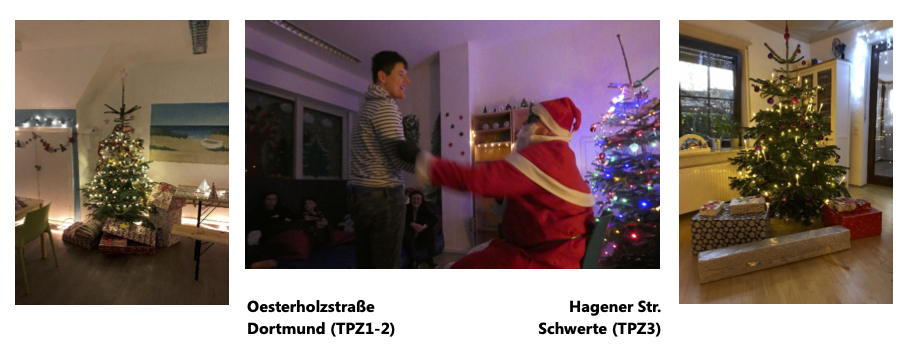
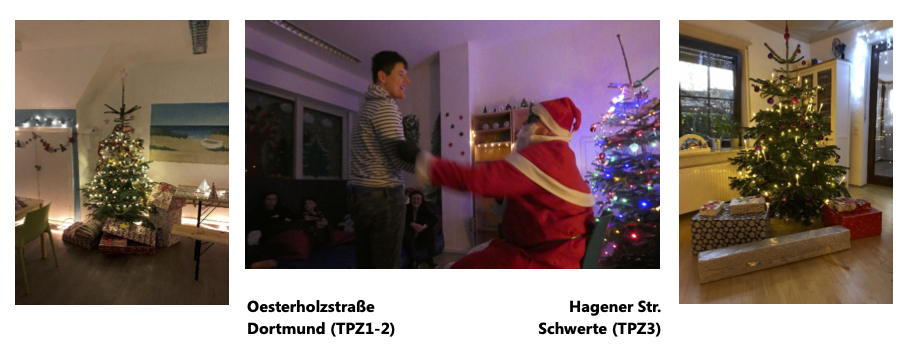
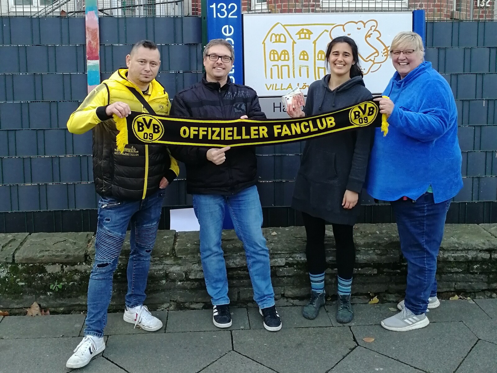
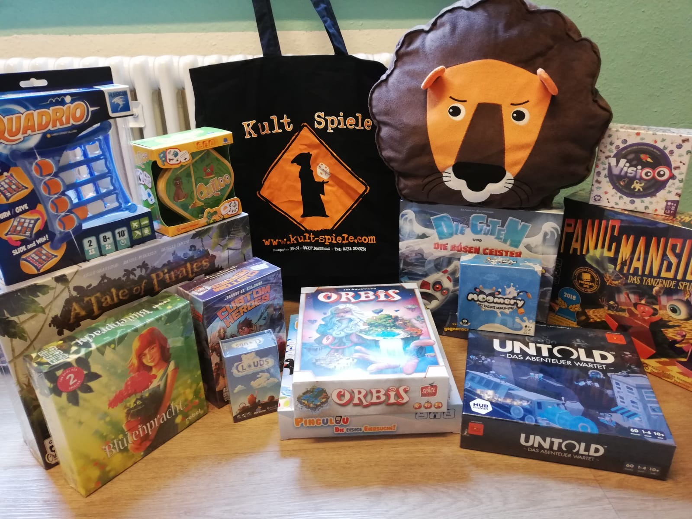
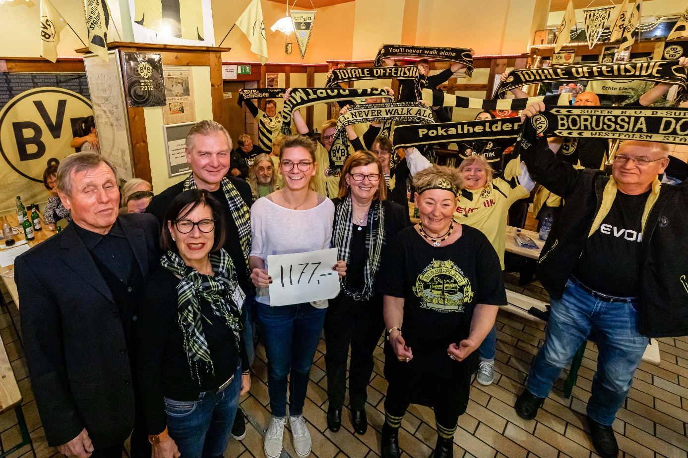

Aktuelles
Wunschbaumaktion der Vitesco Technologies GmbH
Zwischen leuchtenden Weihnachtsbäumen legt sich über die Therapeutisch-Pädagogischen Zentren Villa Löwenherz in der dritten Dezemberwoche eine friedliche Stimmung.
Freudig werden Geschenke ausgepackt und der Weihnachtsmann hat auch seinen Weg in die Oesterholzstraße und in die Hagener Str. gefunden.
Für die meisten der Kinder und Jugendliche ist dies alles nicht selbstverständlich, denn für viele von ihnen hat Weihnachten irgendwann in der Vergangenheit seine Harmonie und seinen Zauber verloren.
Seit Beginn der Villa gibt es eine Woche vor Weihnachten kleine Weihnachtsfeiern auf den Gruppen, um den emotionalen Druck für die Kinder und Jugendlichen mit Blick auf die Weihnachtstage zu nehmen.
Bei den kleinen Feiern vor Weihnachten stehen Tische voller leckerem Essen bereit. Zudem werden für die Kinder und Jugendliche spezielle Freizeitaktivitäten (Fußballspielen, Geländespiele) angeboten, damit erhalten sie die Möglichkeit, sich auszutoben und die Zeit vor den aufregenden Tagen zu überbrücken.
An Weihnachten folgt dann die große Bescherung!
Wir danken Ihnen für Ihre großzügige Hilfe! Damit konnten den Kindern und Jugendlichen so manche ihrer Wünsche erfüllt werden und so wieder weitere schöne Erinnerungen in ihren Lebensrucksack gepackt werden.
Wir als Mitarbeiter der Villa Löwenherz wünschen Ihnen von Herzen ein friedliches Weihnachtsfest, frohes neues Jahr und ganz viel Gesundheit!
 

Spende FanClubs Borussia Dortmund und Borussenliebe
Wir möchten uns ganz herzlich bei den FanClubs Borussia Dortmund und Borussenliebe und deren Initiatoren Herr Ebeling und Herr Schmidt für eine "Doppelspende" in Höhe von 500 € bedanken! Dabei fand ein guter kommunikativer Ausstauch statt und alle waren sich einig, dass Sport Menschen aus verschiedene Kontexten miteinander verbindet. Unsere Kinder/Jugendliche lassen sich natürlich auch in Sachen Sport von den jungen wilden Borussen Moukoko, Bellingham, Sancho, Reyna, Haaland und Co. inspirieren.

Spende Kult Spiele
Eine wundervolle Spiele-Spende erhielten wir vor kurzem von KultSpiele. Große und kleine Spiele, Spiele für jung und alt, für alle was dabei. So lässt es sich gut zu Hause aushalten, während der Coronazeit. Wir bedanken uns hiermit herzlich bei KultSpiele in Kooperation mit Asmodee Deutschland für diese Bereicherung.

Spende Borsigplatz VerFührungen
Wir möchten uns ganz herzlich bei Borsigplatz VerFührungen und deren Initiatorinnen Frau
Kritzler und Frau Plümpe für eine Spende in Höhe 1177 € bedanken! Diese ermöglicht uns,
das Spielzimmer für unsere Kinder neu zu gestalten!
Vielen herzlichen Dank!

Foto: Rüdiger Barz.
Mehr zum Spender: www.borsigplatz-verfuehrung.de